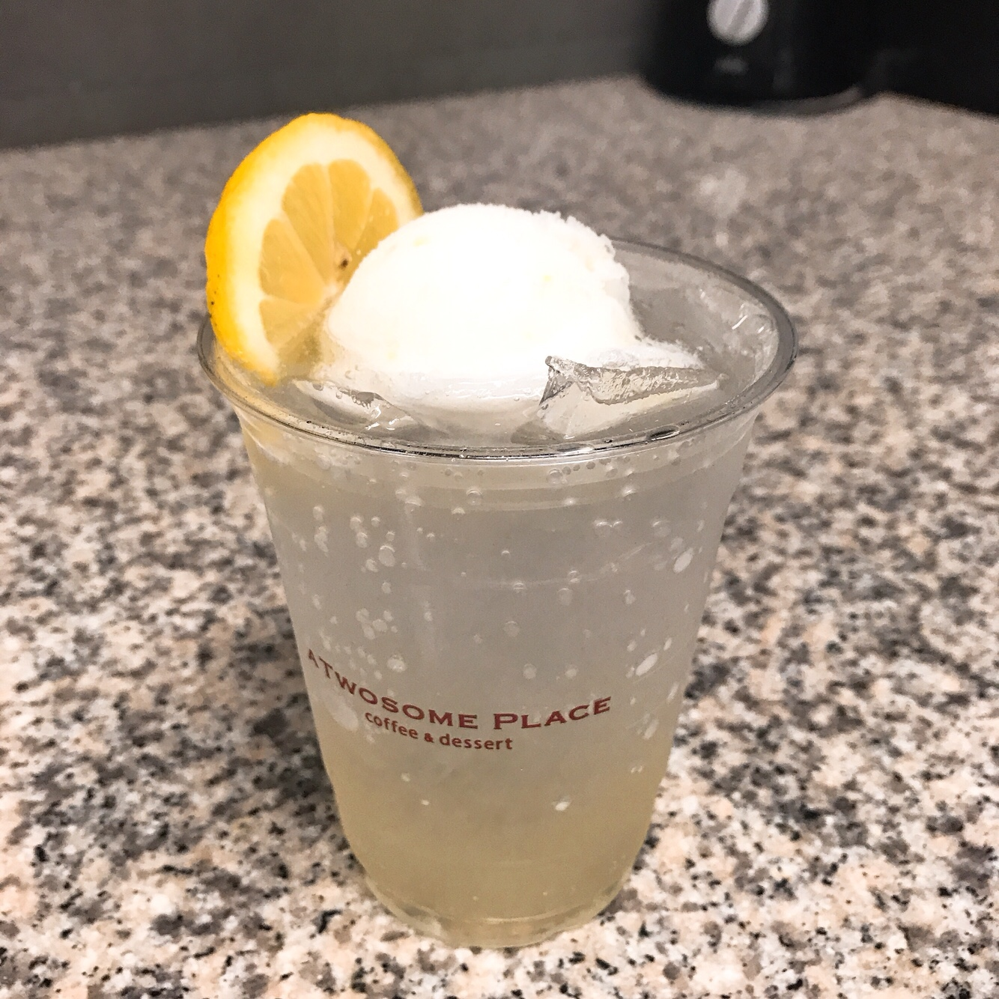

- 모카칩 프라페
- 샹그리아 에이드
- 레몬 셔벗 에이드 
- 스페니쉬 연유라떼
- 커피 쉐이크
초코칩과 초코소스가 들어간 프라페인데
샷 추가해서 먹으면 맛있다.
사진은 평일 오전 언니랑 샷 추가해서 만든 건데 언니가 이상하게
초코소스를 올려서 모양이 좀 그렇지만 맛있다.

뱅쇼 시럽을 넣은 에이드로 위에 생자몽과 레몬이 올라간다.
투썸은 에이드에 사이다가 아닌 탄산수를 넣어 다른 카페보다 설탕이 덜
들어가는 편이다. 가끔 신기한 거 먹고 싶을 때 먹는다.
라임민트시럽에 샴페인시럽 조금 들어가고 위에 레몬 셔벗 아이스크림이랑
생레몬이 올라간다.
레몬 셔벗 아이스크림이 레몬 껍질같은게 씹히고 진짜 상큼하니 맛있다.
셔벗이라 자꾸 으스러져서 모양잡아서 예쁘게 올리려면 신경써야한다.
그래서
모양 예쁘게 나갈때 희열 느낀다. 그래도 귀찮으니까 다들 아메리카노만 먹었으면..

이번에 신메뉴로 나온 연유라떼는 라떼에 연유만 부은것인데
위에 캬라멜 크런치를 뿌린다.
캬라멜 크런치가 맛있다.
연유가 꽤 들어간 거 치고는 안 단편이다. 샷추가해서 먹으면 맛있다.
그냥 공차마냥 흑설탕 밀크티 이런거나 내주지 왜 신메뉴 이런거만 내놓는지
대기업 사람들 입맛 취향 존중 불가

쉐이크는 전부 아이스크림을 갈아서 만드는데
아이스크림 갈 때 아이스크림 통통 튀어서 블랜더기 붙잡고 있어야 하는게 제일 귀찮다.
그리고 아이스크림 퍼놓기 힘들다. 전에 푸다가 손목 나간적이 있어서 다들 아메리카노만 먹었으면 좋겠다.
진짜 샷을 내려서 샷이랑 아이스크림을 같이 갈아 만드는데 레귤러 사이즈만 가능하다.
사진은 내가 많이 먹고 싶어서 라지 사이즈에 먹었다.
캬라멜 소스도 원래 안뿌리는데 같이 일하는 언니가 뿌려 먹어
보자고 해서 먹어봤다. 맛 따로 놀아서 진짜 별로였다.